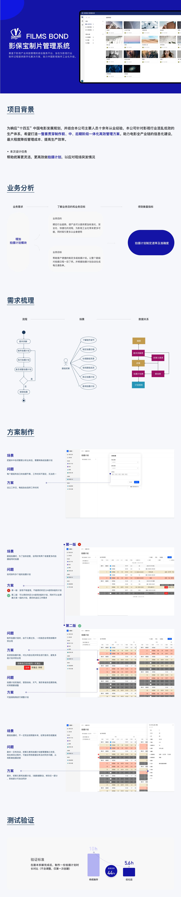

项目背景
影视制片管理涉及剧本拆解、拍摄计划、场地、演员、天气、资源和多端协同。传统线下或表格协作很容易在信息同步、冲突识别和计划调整中产生大量重复沟通。
本项目希望用数字化系统提升制片管理效率，尤其是拍摄计划制定与调整的效率。

我的角色与任务
我以交互设计师身份参与项目，主要参与需求分析、原型方案、设计评审、开发跟进、测试验收和迭代优化。
项目涉及产品、UI、开发、测试等角色协作。具体上线范围和本人负责模块边界仍需后续确认。
设计过程
设计过程从业务目标开始，而不是直接进入界面。先明确“拍摄计划制定速率和准确度”这个指标，再拆解统筹的日常工作路径。
拆解业务目标
把“提升制片效率”拆成可观察的业务问题：计划生成是否更快，资源冲突是否更容易发现，计划调整是否能同步到相关角色。
梳理制片工作流
围绕剧本拆解、场景信息、演员档期、场地资源和拍摄计划，梳理统筹人员如何从原始资料进入排期决策。
识别数据关系
将场景、演员、场地、天气和拍摄组之间的关系显性化，避免信息只停留在单个表格或单个人的经验里。
关键决策
方案围绕“让统筹更快生成和调整拍摄计划”展开，重点不是堆功能，而是让复杂资源关系变得可判断。
多组计划视图
将不同拍摄组和拍摄阶段放入同一套计划结构中，让统筹能够横向比较资源占用和时间安排。
冲突提示
对演员、场地、时间等关键冲突提供提示，减少人工检查成本，避免计划推进后才暴露问题。
三端联动
将管理端、执行端和查看端的信息关系梳理清楚，让不同角色看到自己需要的信息，而不是共享同一份复杂表格。
结果与反思
已知结果显示，拍摄计划制作效率提升 44%，首次创建拍摄计划用时从 10h 降至 5.6h。
效率结果
计划制定用时的下降说明系统有效承接了原先依赖人工经验和反复沟通的部分工作。
展示边界
影视项目资料通常涉及未公开内容、剧组资源和内部业务数据，公开展示前必须确认脱敏范围。
后续反思
如果继续优化，我会进一步关注计划调整后的通知链路和多角色协作成本，让效率提升不只停留在计划生成阶段。